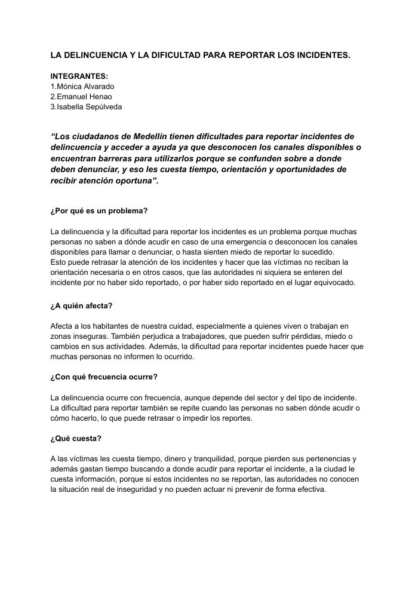

Planteamiento del problema
Los ciudadanos de Medellín tienen dificultades para reportar incidentes de delincuencia y acceder a ayuda, ya que desconocen los canales disponibles o se confunden sobre a dónde deben denunciar; eso les cuesta tiempo, orientación y oportunidades de recibir atención oportuna.

En el celular, abre el PDF para leerlo completo con el visor de tu dispositivo.